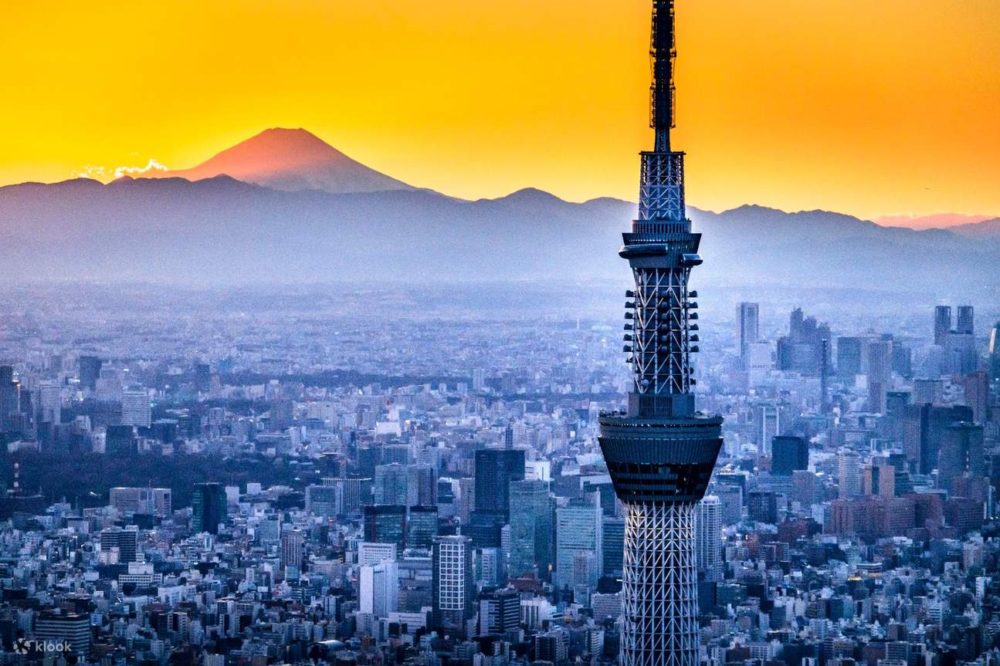
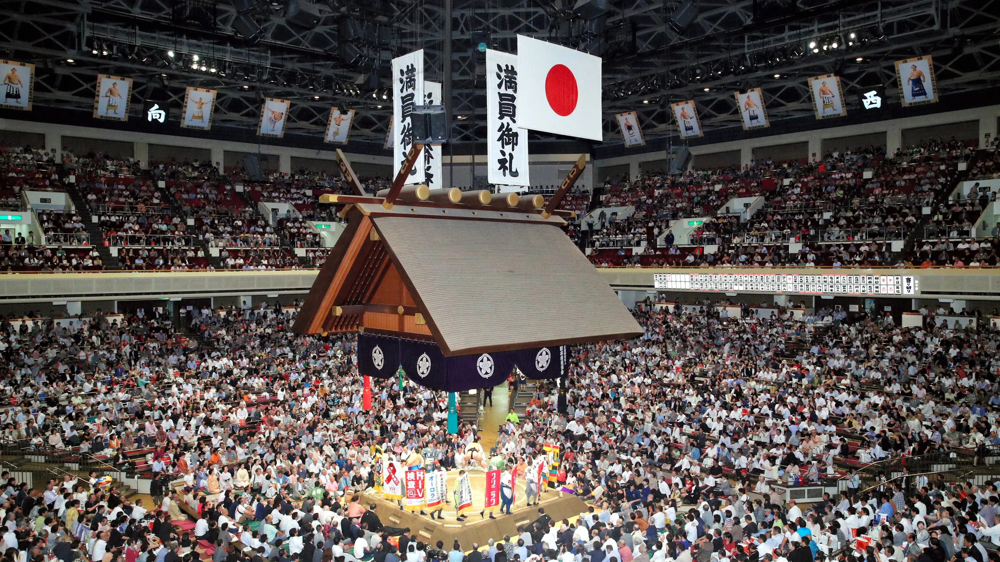
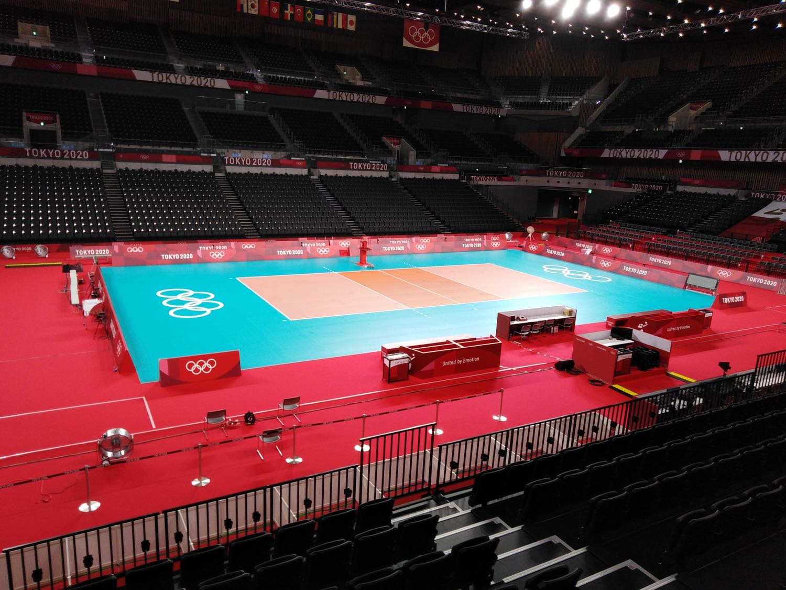
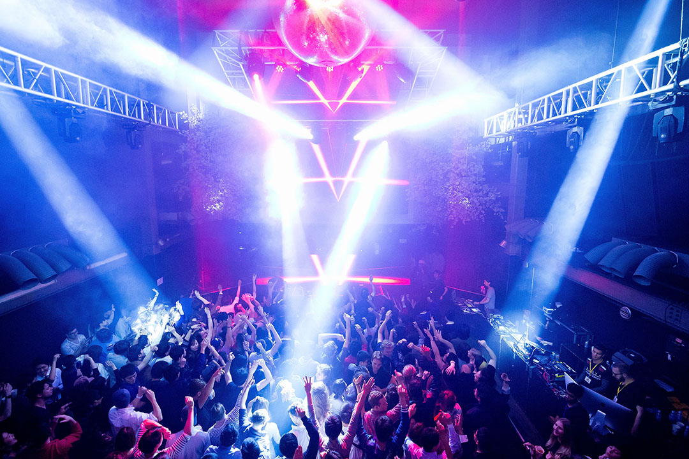
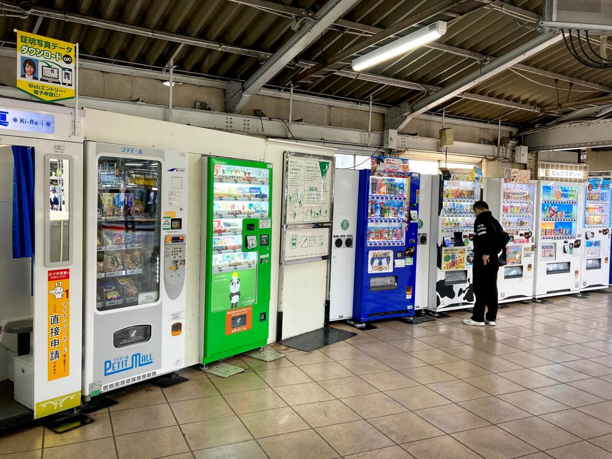
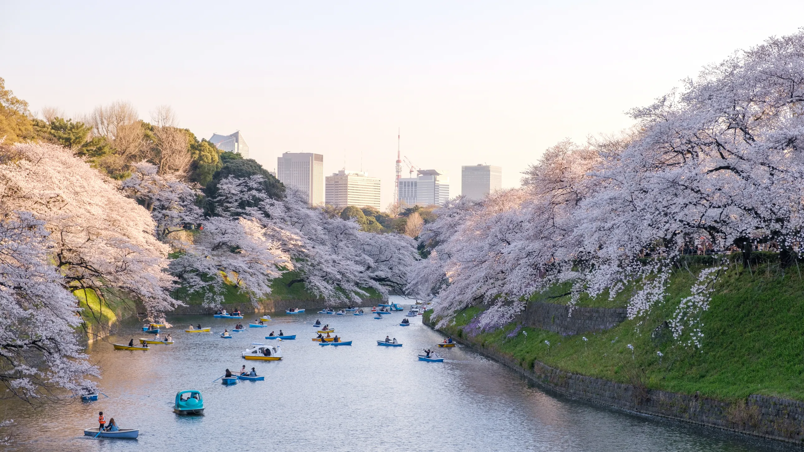
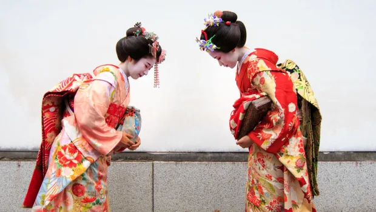

As you embark on your Tokyo journey, you'll find that time is your most valuable asset. Tokyo is a city of
boundless possibilities, with every corner of the city revealing its own unique charm. From tranquil temples to
world-class museums, enchanting gardens to origami classes, and bohemian adventures that beckon the curious
traveller, there's something for everyone.
Our website is designed to be your trusted companion, offering an array of recommendations for your
Tokyo itinerary. Whether you're a first-time visitor or a seasoned traveller, "Tokyo Tourist" provides an
insider's perspective on the very best things to do in this extraordinary city, as well as tips on how be a
respectful visitor. On our map page, you'll discover a treasure trove of options and their specified locations.
We've curated a wide range of attractions to cater to your interests, ensuring that your Tokyo experience is
both fulfilling and memorable. Navigate through the city with ease and make the most of your time by using our
detailed maps and location guides. However, we understand that every traveler is unique, and your exploration of
Tokyo should reflect your personal preferences and interests. Therefore, "Tokyo Unveiled" not only offers
recommendations but also encourages you to further research and delve into Tokyo's hidden gems on your own. We
believe that the beauty of Tokyo lies not only in the landmarks but also in the unexpected discoveries that
await around every corner.
So, prepare to get lost along the way, in the best possible way. Tokyo is a city that invites
exploration, surprises, and unforgettable moments. "Tokyo Tourist" is your trusted companion in unlocking the
very best that Tokyo has to offer, ensuring that your visit to this dynamic city is nothing short of
extraordinary.

Activity
Sensō-ji
While Tokyo may not boast as many temples as Kyoto, Sensō-ji has earned its title as the capital city's premier tourist hotspot for more than just being the default choice. What sets this attraction apart is its unique ambience that simply belongs on your must-visit list. Sensō-ji Temple itself, situated at the far end of a bustling shopping street, is a sight to behold. And if you happen to gaze to the left, you'll spot a recently renovated five-story pagoda, which proudly claims its status as Japan's second tallest pagoda. Surrounded by the temple's vicinity, you'll notice Japanese visitors gracefully circling a large cauldron positioned in front of the temple. This cauldron is no ordinary sight, it houses incense believed to grant blessings of good health to those who engage with it. Early birds who wish to dodge the tourist crowds should plan their visit accordingly, but even if you're only mildly intrigued by Japanese culture, Sensō-ji offers something for everyone to appreciate.

Tokyo Skytree
Activity
Tokyo Skytree is not the city's tallest structure by accident. This iconic landmark offers an experience that's worth adding to your travel bucket list. Tokyo Skytree, a towering architectural wonder, rises above the cityscape and stands as a testament to modern engineering. As you ascend to its towering heights, you'll be treated to breathtaking panoramic views of Tokyo and beyond. Tokyo Skytree is not just any tower, it's the tallest broadcasting and observation tower in the world, and it doesn't disappoint. Its observatories provide visitors with a mesmerising vista of the sprawling metropolis below, from the bustling city streets to the tranquil gardens. For those looking to escape the hustle and bustle of the tourist crowds, an early visit is advisable. However, even if you only have a passing interest in urban architecture and breathtaking views, Tokyo Skytree has something to offer every traveller.
Restaurant
Perched high above the city streets, the restaurant and café at Tokyo Skytree serve up a dining experience that's truly one-of-a-kind. The restaurant, with its jaw-dropping, all-around views, lets you relish scrumptious Japanese and international dishes while soaking in the breathtaking sights of Tokyo. On the flip side, the café offers a more relaxed vibe for folks who simply want to enjoy a cup of coffee or a light meal with a panoramic view of the sprawling city below. Dining up in the clouds is an experience you won't want to pass up, and the chance to savour a meal with such incredible views is a memory that'll stick with you for a lifetime. Whether you're a foodie or just on the lookout for a unique Tokyo experience, the restaurant and café at Tokyo Skytree have something pretty special to offer.
Shop
While Tokyo Skytree's shopping experience might not match the extensive variety of Tokyo's other retail districts, it's not just any shopping destination by mere coincidence. The uniqueness of this place lies in its stunning view and the opportunity to indulge in shopping with a sky-high backdrop. Tokyo Skytree's shopping area is located within the tower itself, offering visitors a chance to browse and purchase various souvenirs, gifts, and Japanese crafts while taking in breathtaking panoramic views of Tokyo. You'll find a diverse range of items to peruse, from traditional Japanese trinkets to modern fashion pieces, making it a perfect place to find unique and memorable souvenirs. The towering Tokyo Skytree, soaring above, ensures a shopping experience like no other. For those who aim to avoid the bustling crowds, it's advisable to explore the shops during off-peak hours, but even visitors with a mild interest in shopping and a desire for breathtaking cityscapes will discover something to savour here.

Activity
Shinjuku Gyoen National Garden
While Shinjuku may not immediately spring to mind as a hub for traditional Japanese gardens, Shinjuku Gyoen National Garden is far from an incidental attraction. This peaceful sanctuary is a must-visit destination, exuding a unique charm. It provides a tranquil haven amid the urban hustle and bustle. With an expansive area of lush greenery that changes its appearance with the seasons, the garden seamlessly blends Japanese, French, and English garden styles. Whether you're a devoted botanist or simply a nature enthusiast, Shinjuku Gyoen National Garden promises an enchanting experience. For a quieter visit and to avoid the crowds, consider coming during off-peak hours. Regardless of your level of horticultural interest, this garden offers an enriching experience that appeals to all.

Activity
Uneo Park
While Ueno Park might not rival the sheer number of cherry blossoms you'd find at other famous Tokyo parks, it's not just a runner-up by default. This destination has its own unique charm that's bound to capture your heart. Settled within Ueno Park, the renowned Ueno Zoo offers an exciting opportunity to get up close and personal with a diverse array of animals. Take a leisurely stroll, and you'll come across the Tokyo National Museum, home to an exceptional collection of Japanese art and history. If you wander towards the north end of the park, you'll find the iconic Ueno Toshogu Shrine, a place steeped in history and revered by locals. Ueno Park is not just about what's in it, it's also about what surrounds it. The park is surrounded by a vibrant neighbourhood that's packed with street food stalls, shopping opportunities, and cultural attractions. So, even if you're not a nature enthusiast, you'll find something in Ueno Park to enlighten your interest.

Activity
Shibuya Scramble Crossing
The Shibuya Scramble Crossing in Tokyo isn't just an ordinary pedestrian crossing, it's a crowded and iconic attraction that warrants a visit for more reasons than one. This busy intersection sees a constant flow of people throughout the day, making it a vibrant spectacle in its own right. If you're keen to experience the sheer excitement of the Shibuya Scramble Crossing with countless people all around, then the best times to go are during the peak hours of the day. From late morning to early evening, you'll find the streets packed with locals and tourists, and the electrifying energy is visible. For those who prefer a quieter and more contemplative experience, your best bet is to visit early in the morning or late at night. During these off-peak hours, the crowds are significantly thinner, and you can take your time to appreciate the surroundings without the hustle. Whether you opt for the busy midday adventure or the serene early morning exploration, the Shibuya Scramble Crossing promises an unforgettable Tokyo experience.

Activity
Tokyo National Museum
The Tokyo National Museum, nestled in Tokyo's heart, is a hidden gem in the world of museums. While it might not be as internationally renowned as some counterparts, it offers a unique and captivating cultural experience. Within its expansive grounds, you'll discover a diverse collection of Japanese art and historical artefacts, spanning centuries. From samurai armour to delicate porcelain, this museum provides an enriching journey through Japan's history. Whether you're a history buff or a novice explorer of Japanese culture, the Tokyo National Museum has something to offer. It's a must-visit destination, delivering an authentic and memorable cultural experience.

Neighbourhood
Shibuya City
Shibuya, a vibrant Tokyo neighbourhood, is a busy hub of activity that goes well beyond its famous pedestrian crossing. The neighbourhood is renowned for its lively atmosphere, and the shopping scene here is an absolute standout. Shibuya's shopping district boasts a wide array of trendy boutiques, department stores, and unique shops that cater to a diverse range of tastes. As you wander through Shibuya's streets, you'll find that the fashion choices are both trendy and diverse, making it a shopping paradise for fashion enthusiasts. Whether you're on the hunt for the latest high-end designer labels or seeking unique, locally crafted items, Shibuya has something to satisfy every shopper's desires. Apart from the shopping extravaganza, Shibuya is also a cultural melting pot, with an energy that's uniquely its own. So, while crossing the iconic Shibuya intersection is a must-do experience, exploring the neighbourhood's fashion-forward and broad shopping scene is another compelling reason to visit this dynamic Tokyo locale.

Neighbourhood
Ginza City
Ginza, Tokyo's iconic city neighbourhood, is a magnet for shoppers and urban connoisseurs. Its reputation as a shopping haven is no accident – it's all about the experience. Ginza's streets are a showcase of luxury, featuring world-renowned brands and cutting-edge architecture, making every stroll a visual treat. With high-end boutiques, department stores, and specialty shops, it's a shopper's paradise, offering the latest fashion, jewellery, and electronics. And when you're ready to refuel, Ginza provides upscale dining to satisfy your palate. Ginza is Tokyo's go-to destination for those craving a shopping adventure and an unforgettable experience.

Activity
Royoku kokugikan National Sumo Arena
While not as renowned as Tokyo's more iconic attractions, the Ryogoku Kokugikan National Sumo Arena is not to be
overlooked. It may not draw the same level of attention as some of the city's other sites, but it has a unique
allure that captures the essence of Japanese sumo culture. Situated in Ryogoku, this grand arena is where the
ancient sport of sumo takes centre stage. Its history and significance in the sumo world are unparalleled.
Inside, you'll find a colossal space where sumo tournaments are held throughout the year. The hushed
anticipation and thunderous cheers of the crowd create an unforgettable atmosphere that is deeply ingrained in
Japan's sporting heritage. Visitors can witness these colossal athletes in action, feel the energy of the crowd,
and even explore the Sumo Museum within the arena, which provides fascinating insights into the sport's rich
history. While it might not be the first place on everyone's Tokyo itinerary, the Ryogoku Kokugikan National
Sumo Arena is an essential stop for those seeking to experience a piece of Japan's traditional sports culture.
The best times to visit tournaments would be January, May, and September.

Activity
Ariake arena
Ariake Arena isn't just another venue, it's a standout attraction in Tokyo, renowned for more than just its default status. This impressive arena holds a special place on the list of must-visit spots, especially for volleyball enthusiasts. The state-of-the-art Ariake Arena is home to thrilling volleyball matches that captivate both locals and visitors alike. Situated within the vibrant Ariake district, the arena's modern design and vibrant atmosphere make it a top choice for sports enthusiasts. With its spacious seating and top-notch facilities, Ariake Arena offers an ideal setting to witness the excitement of volleyball matches. Whether you're a keen fan of the sport or just mildly curious, the Ariake Arena's lively ambience and thrilling sports events provide something for everyone to enjoy.

Activity
Uneo Zoo
Ueno Zoo, though not Tokyo's largest, is a must-visit attraction offering a unique experience. Located in the delightful Ueno Park, the zoo boasts diverse habitats and a wide range of animals, making it an engaging and educational destination for animal enthusiasts of all ages. Whether you're fascinated by lions, giraffes, or pandas, Ueno Zoo is a captivating exploration. Arriving early is recommended to avoid crowds, but it's an enriching experience for anyone curious about wildlife and nature. It's more than just a zoo, it's an animal adventure in the heart of Tokyo.
Activity
Disneyland
Tokyo Disneyland isn't your typical theme park, it's a magical world in the heart of the city. With enchanting lands, iconic sights like Cinderella Castle, thrilling rides, and delightful shows, it's a place where Disney's storytelling meets Japanese attention to detail. Whether you're a Disney fan or just seeking a day of wonder, Tokyo Disneyland promises smiles and cherished memories for all ages.

Restaurant
Cat Cafe Mocha
While Tokyo has a wide range of unique cafes, Cat Cafe Mocha stands out as a delightful destination that's sure to heighten your interest. This charming establishment is much more than just your run-of-the-mill cat cafe. Located in the heart of Tokyo, Cat Cafe Mocha provides a haven for feline enthusiasts and those seeking a cosy atmosphere. Upon entering, you'll be greeted by a cosy and inviting environment, with numerous resident cats ready to share their companionship. The cafe offers an extensive selection of refreshments, ensuring that you can enjoy your favourite drink while spending quality time with your furry friends. For those who may be new to the concept of a cat cafe, it's a place where you can unwind and enjoy the soothing presence of cats. The resident cats at Cat Cafe Mocha are known for their friendly and playful nature, making your visit even more enjoyable. Whether you're seeking relaxation, a unique coffee experience, or simply some furry companionship, this cat cafe is a must-visit attraction for cat lovers and coffee enthusiasts alike.

Restaurant
Matsunozushi
Matsunozushi, though not the most renowned Michelin-starred sushi restaurant, offers a unique and exceptional sushi experience. Tucked away in a serene corner of the city, it's a culinary haven for sushi aficionados. Inside, the chef's precision and presentation elevate sushi to an art form, earning Matsunozushi its coveted Michelin star. Reservations are a must due to its growing popularity, making it a must-visit for food enthusiasts and anyone curious about fine dining.

Activity
WOMB
The WOMB nightclub stands out as a nightlife gem in Tokyo, not just by chance. This club offers an atmosphere and experience that's truly remarkable and should be on the radar of anyone looking for an unforgettable night out in the city. Located at the heart of the bustling Shibuya district, WOMB immerses you in the vibrant pulse of Tokyo's nightlife. WOMB's interior is a sensory delight, with state-of-the-art lighting and sound systems that ensure an electric atmosphere. Dance enthusiasts will be thrilled to find themselves moving to the beat on a world-class dance floor. The club frequently hosts renowned DJs and electronic music events, making it a magnet for those who are passionate about music and dancing. If you're seeking an escape from the ordinary and a night of electrifying entertainment, WOMB is the place to be. However, keep in mind that this popular venue can get quite crowded, so arriving early is a smart move for those who prefer to enjoy the night with a bit more space to dance and socialise. Whether you're a seasoned club-goer or just looking to experience Tokyo's nightlife scene, WOMB offers an enticing experience that's not to be missed.

Activity
Vending Machines
Tokyo is not just about its towering skyscrapers and historic sites, it's also a city renowned for its vending machines, and they aren't scattered across the city just by chance. These vending machines have an atmosphere and charm all their own, making them an essential experience for any traveller. These machines are practically a part of Tokyo's cityscape. You can spot them on nearly every street corner and in every nook and cranny of the city. From offering a diverse selection of beverages, both hot and cold, to snacks and even quirky items like toys and souvenirs, Tokyo's vending machines are an intriguing reflection of modern Japanese convenience and culture. These machines are always there to quench your thirst or satisfy your cravings. Plus, some of them even have a touch of futuristic appeal, with their bright, eye-catching designs and innovative payment methods like contactless cards and smartphones. If you're ever in Tokyo, take some time to explore the city's vending machines. Whether you're a dedicated foodie, a tech enthusiast, or simply an inquisitive traveller, you'll find something to appreciate about this quintessential Tokyo experience.

Sakura's
To catch Japan's cherry blossoms at their most enchanting, it's all about timing. The prime season for these delicate blossoms, known as "sakura," typically falls in late March to early April. Tokyo and Kyoto are standout destinations to witness this awe-inspiring spectacle. In Tokyo, peak bloom usually occurs in late March, while in Kyoto, it's early April. Stay updated with bloom forecasts, as timing can vary from year to year due to weather conditions. Visiting during this period allows you to immerse yourself in "hanami," the cherished Japanese tradition of cherry blossom viewing. For a more peaceful experience, consider weekdays or early mornings to avoid the busiest crowds. Grab your camera and relish the stunning contrast of sakura against Japan's historic backdrop.

Respect
When visiting Tokyo or any part of Japan, it's essential to embrace local customs and values. Respect for Japanese culture and its people is vital for a fulfilling and harmonious trip. Politeness and respect are highly regarded in Japan. When entering traditional places like homes or temples, remove your shoes to honour their cleanliness and significance. Bowing is a common form of greeting and respect, so a slight nod of the head when meeting people or expressing gratitude is appreciated. Learning a few basic Japanese phrases like "hello" (konnichiwa) and "thank you" (arigatou gozaimasu) can bridge cultural gaps and earn you goodwill. By understanding and respecting Japanese customs and etiquette, you'll not only enhance your travel experience but also gain a deeper appreciation for the culture. So, be courteous, open-minded, and considerate during your visit to this incredible city and country.